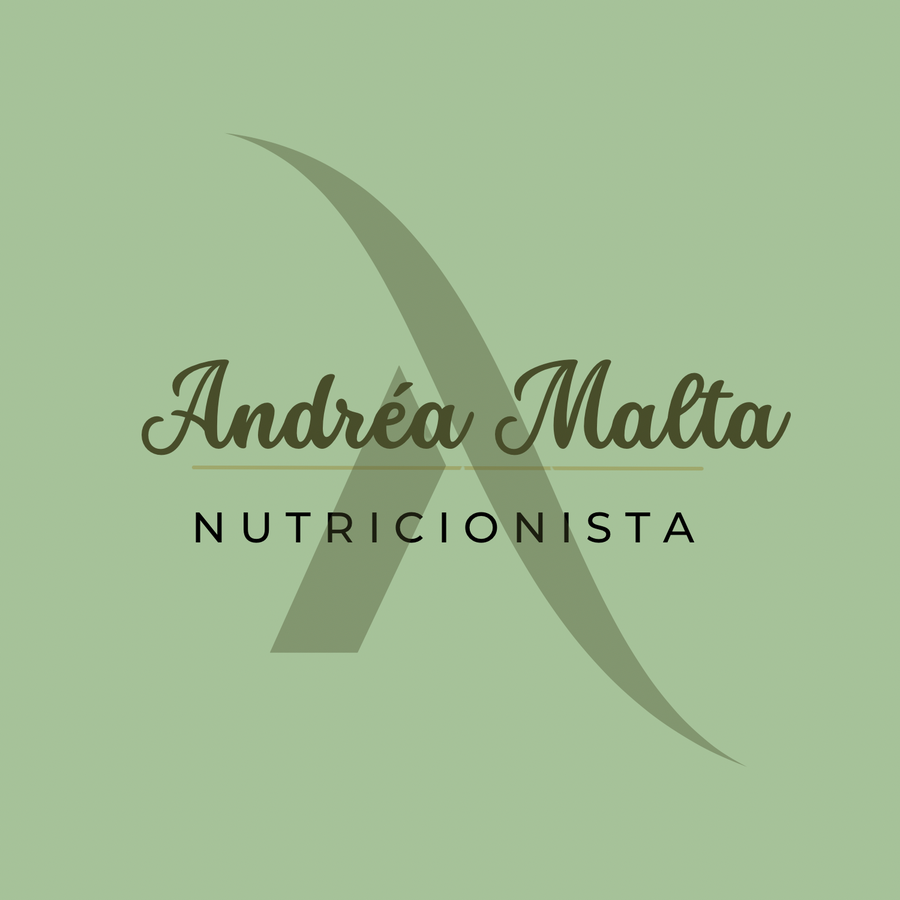
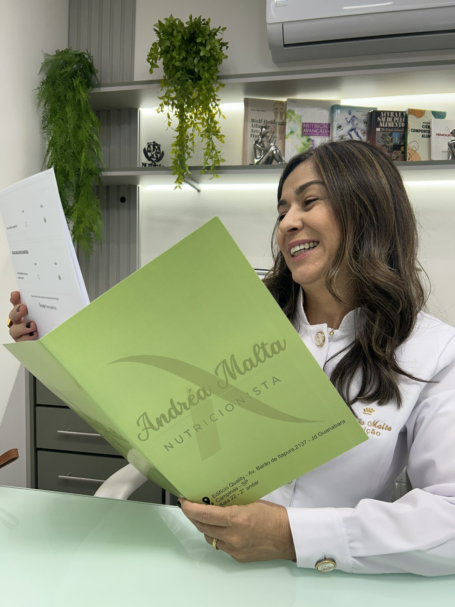
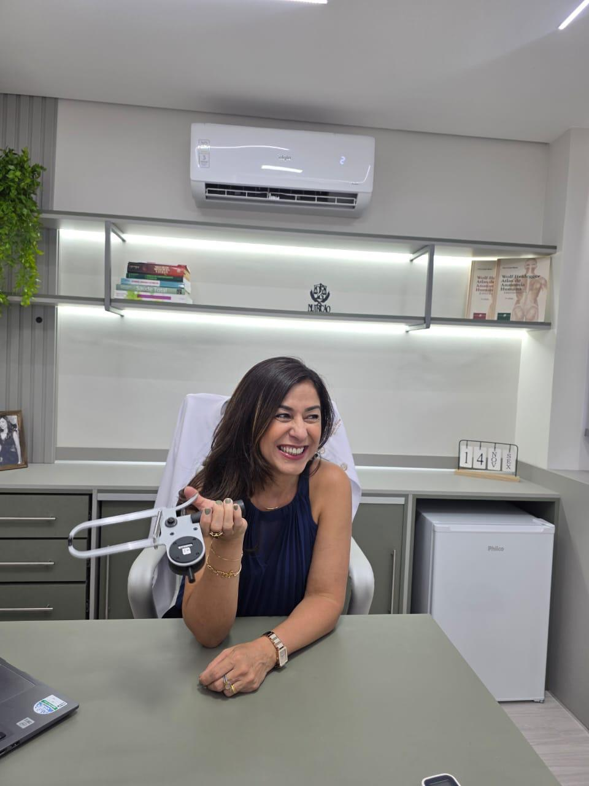
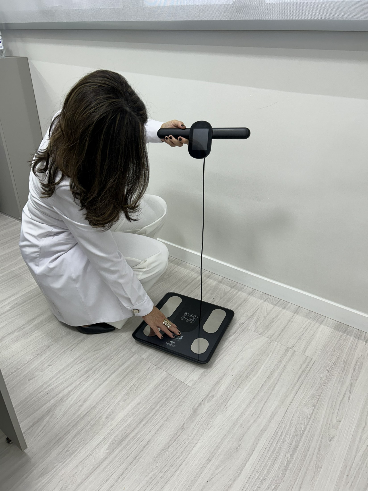
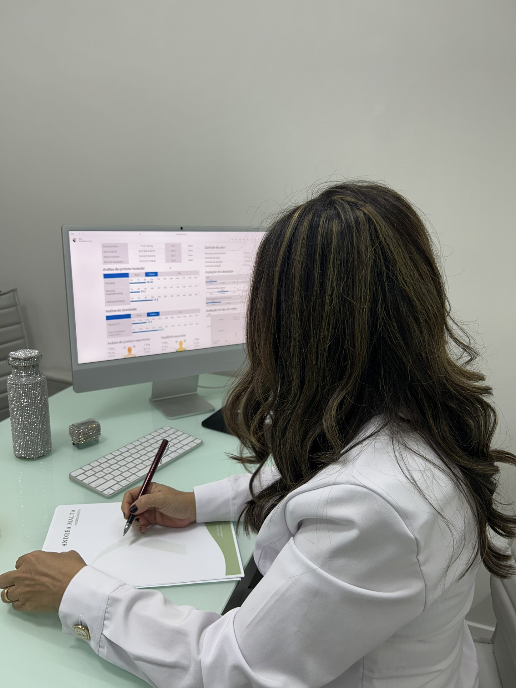
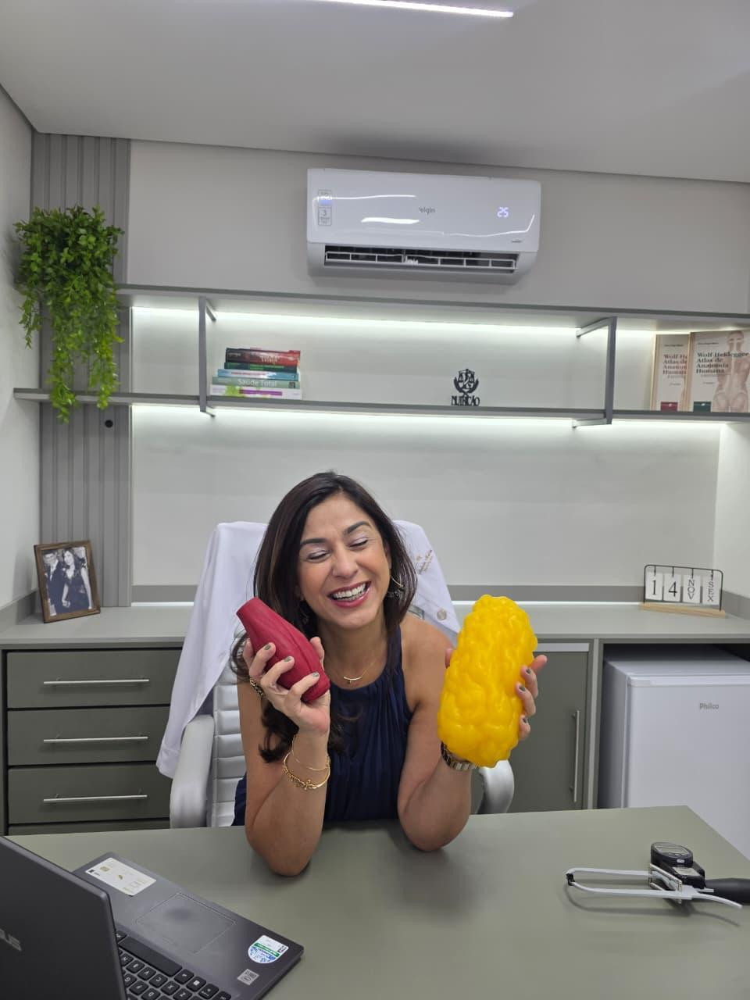

Nutricionista registrada
Atendimento com CRN-3 91268/SP e identificação profissional clara desde o primeiro contato.

Andréa Malta Nutricionista AgendarAtendimento nutricional em Campinas e online
Nutrição leve para mulheres que querem cuidar da saúde sem viver de restrição.
Acompanhamento presencial e online com escuta, ciência e um plano possível para a sua rotina.
Confiança no cuidado
Atendimento com CRN-3 91268/SP e identificação profissional clara desde o primeiro contato.
Pós-graduação em andamento em Endurance e Saúde da Mulher, com foco em rotina, sintomas e metas reais.
Bioimpedância, histórico, exames, preferências e hábitos entram na conversa antes do plano alimentar.
O acompanhamento evita terrorismo alimentar e prioriza consistência, autonomia e saúde no longo prazo.

Sobre a nutricionista
Andréa de Oliveira Malta Faria é nutricionista registrada no CRN-3 91268, em São Paulo. Seu atendimento valoriza uma relação mais tranquila com a comida, com condutas personalizadas e sem promessas extremas.
Atualmente realiza pós-graduação em Endurance e Saúde da Mulher, trazendo esse olhar para rotinas reais, objetivos possíveis e acompanhamento próximo.
Atendimentos
O plano nasce da avaliação, da rotina, das preferências alimentares e do que faz sentido para cada fase.

Consulta com escuta, avaliação de hábitos, definição de metas e orientação alimentar prática.

Exame de composição corporal para acompanhar indicadores e ajustar o plano com mais precisão.

Atendimento na clínica em Campinas ou acompanhamento remoto com a mesma organização do cuidado.
Principais focos
A consulta pode apoiar mudanças de hábitos, acompanhamento de condições metabólicas e cuidado nutricional voltado à saúde da mulher.

Como funciona
Dúvidas comuns
Não. O acompanhamento pode envolver saúde da mulher, diabetes, hipertensão, obesidade, endometriose, SOP, rotina alimentar e outros objetivos de saúde.
Sim. A consulta pode ser presencial em Campinas ou online, com orientação organizada para a rotina da paciente.
O exame pode ser realizado no atendimento presencial quando indicado, como apoio para avaliar composição corporal e acompanhar a evolução.
A proposta é construir um plano possível, com orientação técnica e respeito às preferências, rotina e necessidades individuais.
Contato e localização
Consultas com horário agendado, bioimpedância e acompanhamento nutricional individualizado.